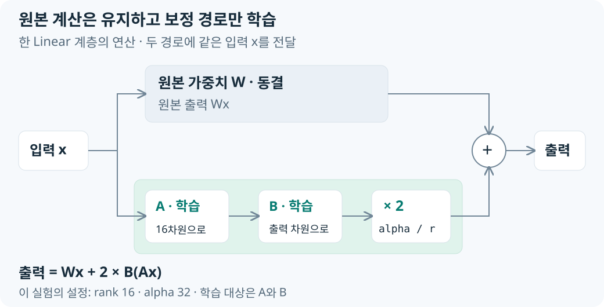

원본 Qwen 가중치는 동결하고 Linear 계층에 붙인 LoRA adapter만 업데이트했습니다. rank·alpha는 보정 경로를, learning rate·gradient accumulation·optimizer는 업데이트 방식을 정합니다. 설정을 만든 뒤 SFTTrainer에서 실제 학습으로 연결하는 과정입니다.
원본은 동결하고 보정 경로만 학습
LoRA 행렬 구조와 보정 연산

같은 입력이 원본과 LoRA 경로로 병렬 통과하고 두 출력이 더해집니다. r=16은 16비트가 아니라 저랭크 중간 차원입니다. alpha/r = 32/16 = 2이므로 개념적으로 Wx + 2 × B(Ax)가 됩니다.
LoRA 설정과 adapter 장착
peft_config = LoraConfig(
task_type="CAUSAL_LM",
r=16,
lora_alpha=32,
lora_dropout=0.05,
target_modules="all-linear",
bias="none",
)
LoraConfig를 만드는 순간 학습이 시작되는 것은 아닙니다. 어떤 Linear에 어느 크기의 adapter를 붙일지 적는 설정표이며, 실제 장착은 뒤의 SFTTrainer 생성 때 PEFT가 수행합니다. 원본 Qwen 가중치는 고정하고 A·B adapter만 업데이트합니다.
dropout·target modules·bias
lora_dropout=0.05는 학습 중 LoRA 경로의 일부 입력을 무작위로 끄는 정규화입니다. 추론 시에는 dropout을 적용하지 않습니다.
target_modules="all-linear"는 특정 q_proj 하나만이 아니라 모델의 Linear 계층 전체에 LoRA를 붙입니다. 그래서 trainable parameter가 늘지만 도구 호출 행동을 여러 projection에서 보정할 수 있습니다.
bias="none"은 기존 Linear의 bias는 학습하지 않습니다. 이번 실험의 추가 학습 대상은 LoRA A/B로 제한합니다.
r=16, alpha=32, lora_dropout=0.05, target_modules="all-linear"를 사용했습니다. 이 구성의 학습 파라미터 수는 17,432,576개입니다.
저랭크 분해에 따른 학습 파라미터 감소
새 2048×2048 보정 행렬 직접 학습: 4,194,304개
LoRA A: 2048×16 = 32,768개
LoRA B: 16×2048 = 32,768개
LoRA 합계: 65,536개
큰 원본 W 계산을 없애는 것이 아니라, 학습할 보정 파라미터와 gradient·optimizer state를 저랭크 A/B로 줄이는 방법입니다. 이번 실행은 대상 Linear 전체에 adapter를 붙여 17,432,576개, 전체의 1.003%만 학습 대상이었습니다.
800개 예제를 50회 업데이트로 학습
| 설정 | 값 | 의미 |
|---|---|---|
| num_train_epochs | 1 | 800개 Train을 한 번 순회 |
| per_device_train_batch_size | 1 | 한 번에 GPU에 넣는 예제 수 |
| gradient_accumulation_steps | 16 | 16개 예제의 gradient를 모은 뒤 한 번 optimizer update |
| learning_rate | 2e-4 | LoRA A/B가 이동하는 기본 보폭 |
| warmup_ratio | 0.05 | 초반 약 5% step 동안 learning rate를 서서히 증가 |
| lr_scheduler_type | cosine | 초기 peak 이후 learning rate를 점차 감소 |
| max_grad_norm | 0.3 | gradient가 너무 크면 방향을 유지하며 크기 제한 |
| max_length | 1152 | chat template 적용 후 허용할 최대 token 수 |
현재 설정에서 약 800/16 = 50회의 optimizer update가 발생합니다. learning rate는 원본 출력과 LoRA 출력의 혼합 비율이 아니라, 학습 중 A/B 가중치를 움직이는 폭입니다. 학습 종료 후 추론에서는 learning rate를 사용하지 않습니다.
Loss·gradient·optimizer의 역할
정답 토큰의 모델 확률 p 계산
→ loss = -log(p)
→ backward()로 A/B의 gradient 계산
→ 16개 예제의 gradient 누적
→ AdamW가 learning rate를 적용해 A/B 업데이트
정답 토큰의 확률이 높으면 -log(p)가 작고, 확률이 낮으면 loss가 커집니다. gradient는 현재 위치에서 loss를 줄이는 방향을 알려줄 뿐 최적 위치를 직접 알려주지 않습니다. 따라서 작은 learning rate로 이동하고 다시 forward·loss·backward를 반복합니다.
optim="adamw_torch"는 단순 SGD가 아니라 이전 gradient의 평균과 크기를 참고해 update를 만드는 AdamW를 사용합니다. weight_decay=0.0으로 별도의 0 방향 규제는 사용하지 않고, max_grad_norm=0.3으로 지나치게 큰 gradient의 전체 크기만 제한합니다.
메모리와 정밀도 옵션
assistant_only_loss=True
gradient_checkpointing=True
gradient_checkpointing_kwargs={"use_reentrant": False}
packing=False
bf16=True
fp16=False
tf32=True
assistant-only loss는 입력 전체를 보되 assistant 정답만 loss를 계산합니다. Gradient checkpointing은 중간 activation을 덜 저장하고 backward에서 재계산해 GPU 메모리를 줄입니다. packing=False는 여러 예제를 한 덩어리로 이어 붙이지 않고 경계를 유지합니다. BF16은 모델·학습 자료형이고, TF32은 Ampere GPU의 일부 FP32 행렬 연산을 빠르게 허용하는 옵션이지 모델 가중치를 TF32로 저장한다는 뜻이 아닙니다.
검증·체크포인트·로그
eval_strategy="steps"
eval_steps=25
save_strategy="steps"
save_steps=25
save_total_limit=3
logging_steps=5
report_to="none"
25 optimizer step마다 validation과 checkpoint를 실행하고, 최대 3개 checkpoint만 남깁니다. 5 step마다 로그를 남기며 외부 Weights & Biases나 TensorBoard로 자동 전송하지 않습니다. seed와 data_seed를 모두 42로 기록해 모델 랜덤성과 데이터 셔플을 함께 재현하기 쉽게 합니다.
입력 계약 유지 설정
eos_token="<|im_end|>"
chat_template_path=str(chat_template_path)
remove_unused_columns=True
skip_memory_metrics=False
eos_token은 Qwen 메시지 끝을 나타내고, chat_template_path는 Trainer도 앞에서 검증한 동일한 Jinja template을 사용하게 합니다. remove_unused_columns=True는 모델 forward()에 필요 없는 원본 컬럼을 제거하고, skip_memory_metrics=False는 메모리 지표를 건너뛰지 않도록 합니다.
입력·설정·adapter를 SFTTrainer에 연결
Manifest 작성
manifest = {
"training_method": "bf16_lora",
"quantization": None,
"model_id": config["model_id"],
"resolved_revision": resolved_revision,
"chat_template": {"sha256": ...},
"dataset": {"train": {"sha256": ...}, "valid": {"sha256": ...},
"gpu": {"name": ..., "total_memory_bytes": ...},
}
manifest는 학습을 대신하는 파일이 아니라, 나중에 같은 결과를 재현하기 위한 실행 기록입니다. 모델 revision, template·데이터 checksum, 라이브러리 버전, GPU 정보를 함께 저장합니다.
GPU callback과 Trainer
class GpuMemoryCallback(TrainerCallback):
def on_log(self, args, state, control, logs=None, **kwargs):
logs["gpu_allocated_gib"] = ...
logs["gpu_reserved_gib"] = ...
logs["gpu_peak_allocated_gib"] = ...
trainer = SFTTrainer(
model=model,
args=training_args,
train_dataset=Dataset.from_list(train_records),
eval_dataset=Dataset.from_list(valid_records),
processing_class=tokenizer,
peft_config=peft_config,
callbacks=[GpuMemoryCallback()],
)
Dataset.from_list()는 Python 레코드 목록을 Trainer가 읽는 Hugging Face Dataset으로 바꿉니다. processing_class는 template 적용과 tokenization, peft_config는 LoRA 장착 규칙, callback은 로그 시 GPU 메모리 추가 기록을 담당합니다. 이때 PEFT가 대상 Linear에 A/B를 실제 장착하고 원본 가중치를 동결합니다.
재개와 학습 호출
resume_checkpoint = resolve_resume(output_dir, args.resume)
train_result = trainer.train(
resume_from_checkpoint=resume_checkpoint
)
--resume none은 처음부터, --resume auto는 output 폴더의 마지막 checkpoint부터, 경로 지정은 해당 checkpoint부터 재개합니다. 실제 forward·assistant loss·backward·gradient accumulation·AdamW update는 trainer.train() 안에서 일어납니다.
학습 산출물과 저장 목적
trainer.save_model("output/.../final_adapter")
tokenizer.save_pretrained("output/.../final_adapter")
trainer.save_state()
trainer.save_metrics("train", train_result.metrics)
eval_metrics = trainer.evaluate()
trainer.save_metrics("eval", eval_metrics)
final_adapter에는 전체 Qwen 가중치가 아니라 LoRA A/B와 adapter 설정이 들어갑니다. tokenizer도 함께 저장하는 이유는 새 토큰을 학습해서가 아니라 PAD·EOS·chat template이라는 입력 계약을 보존하기 위해서입니다.
| 산출물 | 의미 | 사용처 |
|---|---|---|
| final_adapter | 원본 Qwen에 붙일 LoRA A/B·설정·tokenizer | adapter를 실행 중 장착 |
| training_manifest.json | revision·checksum·GPU·패키지·설정 기록 | 실험 재현 |
| train_results.json | train loss·시간·처리량·메모리 | 학습 상태 분석 |
| eval_results.json | validation loss·시간·메모리 | 학습 중 검증 |
validation loss와 실제 Function Calling 성공률은 다른 지표입니다. 전자는 assistant 토큰 확률의 손실이고, 후자는 별도의 vLLM 평가기가 도구명·JSON·Schema·인자를 검사합니다.
실제 실행의 설정·손실·원본 파일
저장된 Trainer 상태는 1 epoch·50 update까지 진행한 결과를 담고 있습니다. 현재 Train·Validation과 template의 체크섬도 학습 manifest에 기록된 값과 일치했습니다.
| 저장된 근거 | 실제 값 | 그 값의 의미 |
|---|---|---|
| 모델 revision | 70d244cc86ccca08cf5af4e1e306ecf908b1ad5e |
학습 manifest에 고정된 원본 Qwen revision |
trainer_state.json |
epoch 1.0, global_step 50, max_steps 50 | 기록된 학습은 1 epoch·50 update까지 진행됨 |
train_results.json |
train loss 0.1689955, runtime 670.5378초 | 학습 run의 집계 손실과 실행 시간 |
eval_results.json |
validation loss 0.0382430 | 학습에 연결한 validation 데이터의 토큰 손실 |
| 데이터 일치 | 현재 Train·Validation SHA-256이 manifest와 각각 일치 | 현재 파일과 기록된 학습 입력의 동일성 확인 |
| 템플릿 일치 | 현재 Jinja SHA-256이 manifest와 일치 | 현재 학습 template과 기록된 파일의 동일성 확인 |
| GPU·정밀도 | NVIDIA RTX A5000, BF16, quantization 없음 | 기록된 학습 환경 |
| 주요 패키지 | torch 2.10.0, transformers 4.57.6, TRL 0.28.0, PEFT 0.17.1 | 해당 run의 manifest가 기록한 버전 |
학습 손실은 assistant 정답 토큰의 예측 오차이며, 함수 호출 성공률은 별도의 평가기가 함수명·인자를 정답과 비교해 계산합니다.
근거: 학습 manifest, Trainer 상태, 학습 지표, 검증 지표.
설정별 전체 코드 발췌와 행렬 차원의 기초 해설은 학습 코드 참고 해설에 있습니다.